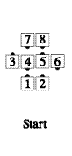
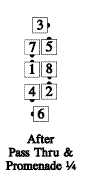
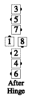
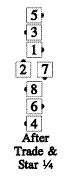
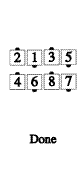
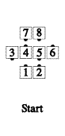
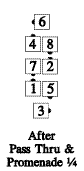
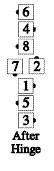
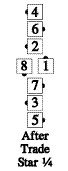
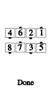

From any quarter tag or quarter line formation in which each very center can Pass Thru with an outside dancer. [At Advanced, this call is restricted to starting from right-or left-hand quarter tag formations only.] The very centers Pass Thru with the dancers they are facing, while the ends of the center line/wave Promenade 1/4 around the outside of the set. The original very centers and the dancers they are next to, Hinge. The centers Star (or Diamond Circulate) one spot, while the outsides Trade. Those who meet now Cast Off ¾, while the others move up (very centers along an outward diagonal, and very ends along a quarter circle) to become the ends of parallel waves.
Example:

Or:

Timing: 12
© Copyright 1982, 1986-1988, 1995, 2001-2015. Bill Davis, John Sybalsky, and CALLERLAB Inc., The International Association of Square Dance Callers. Permission to reprint, republish, and create derivative works without royalty is hereby granted, provided this notice appears. Publication on the Internet of derivative works without royalty is hereby granted provided this notice appears. Permission to quote parts or all of this document without royalty is hereby granted, provided this notice is included. Information contained herein shall not be changed nor revised in any derivation or publication.